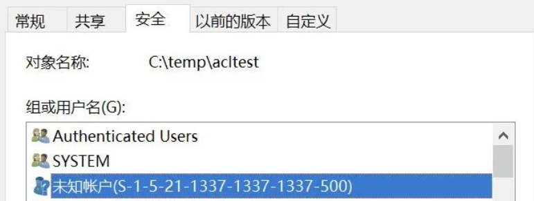
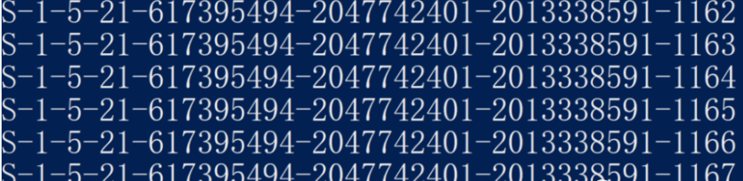
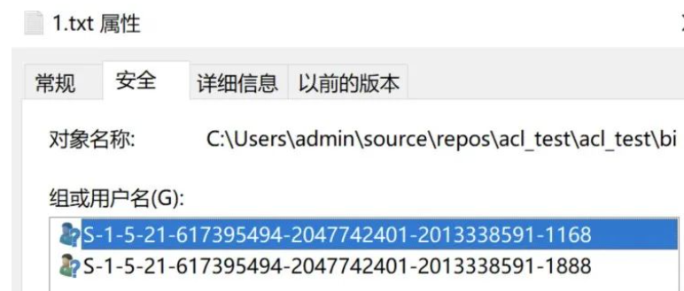
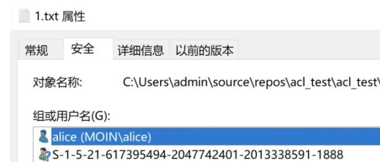
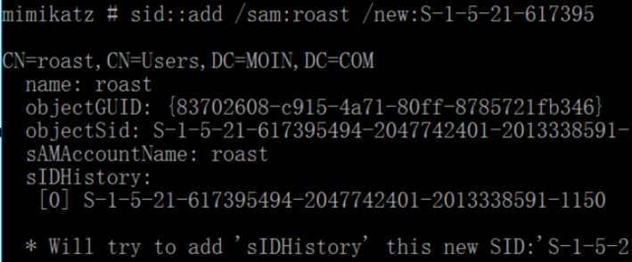
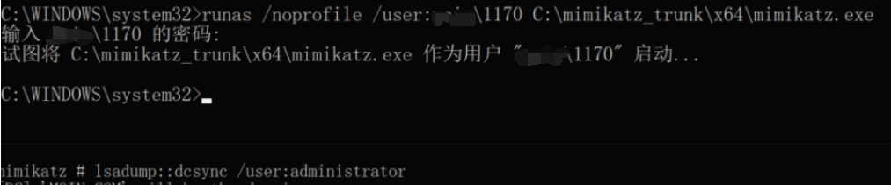

ACL之任意SID利用
Windows ACL
访问控制列表，https://learn.microsoft.com/en-us/windows/win32/secauthz/access-control-lists
Windows文件系统的访问控制列表 (ACL) 是附加到对象的权限列表。ACL 指定哪些用户或系统进程被授予访问对象的权限，以及允许对给定对象执行哪些操作。典型 ACL 中的每个条目都指定了一个主题和一个操作。例如，如果一个文件的 ACL 包含 (Alice, delete)，这将授予 Alice 删除该文件的权限。
利用点
在为Windows安全对象添加ACL信息时，通常ACL中可选择和显示的都是Windows账户名称，但Windows系统实际是根据SID来识别不同账户的，因此也可以通过账户的SID为索引添加或修改文件ACL。实际上在添加或修改ACL时可以使用任意的SID值，即使该SID不存在。
正常情况下通过GUI添加ACL时，用户无法添加当前主机搜索不到的账户，搜索的范围包含了所有当前主机和所在域的安全账户和账户组，因此无法添加不存在的用户。所以在编辑ACL时要想使用任意SID，要解决的第一个问题是如何直接写入SID。
C#的库System.Security.AccessControl可以提供对ACL操作的支持，而且可以通过指定SID修改ACL信息，借助该库可以实现ACL注入任意SID。当一个不存在的SID构造后，会显示未知账户

利用方法
1.SID预测
注入任意SID的一种利用方法是通过预测未来的SID实现权限维持，使用下述powershell命令查看当前域SID的序列。
1 | (([adsisearcher]"(objectSid=*)").FindAll()).Properties.objectsid | ForEach-Object {(New-Object System.Security.Principal.SecurityIdentifier($_,0)).Value} |

由于SID为自动编号的值，根据现有的账户SID值加1即为下一个新账户的SID为S-1-5-21-617395494-2047742401-2013338591-1168，在1.txt中为1168写入一条ACL并授予其完全访问控制权限，由于目前该SID的账户还不存在，因此系统无法识别该账户只显示SID

若创建一个新的账户将会占用这个SID，之前的SID变成刚刚创建的新账户名称。

2.利用已删除账户SID
2.1.影子账户
影子账户是一种比较古老的SID相关攻击，简述一下就是通过将账户A的注册表信息复制到账户B后，操作系统会将账户B当作账户A，账户B就像账户A的影子一样，故称影子账户。
如果把账户A的注册表信息保存下来，然后删除账户A，那么账户A相关的ACL信息都无效，但是只需将账户A的注册表信息复制到账户B，那么原有的账户B会继承账户A的权限。
以往这个攻击方法的缺陷是新建的安全对象无法添加已删除账户A的ACL，但是结合任意SID注入ACL可以弥补这个缺点。
2.2.SID History
SID History相当于用户的第二个SID，是域环境中的一个传统的权限维持手段。SID History字段也可以写入任意SID。将已删除的SID写入安全对象的ACL中，因为账户被删除，ACL无效，然后通过将已删除账户A的SID写入账户B的SID History，则账户B会继承该已删除账户A的权限，使得被删除的ACL成为账户B的ACL。将SID History与任意SID注入可以实现进一步的隐匿，与影子账户的效果类似。
可通过mimikatz写入SID History
1 | mimikatz # sid::add /sam:[object-account] /new:[FAKE-SID] |

利用面
1.权限维持
在AD域中结合对活动目录注入任意SID的ACL可以实现权限维持，具体的活动目录对象和权限可以根据自身的需求选择，以下是几个示例：
1.高权限组如Domain Admins组的账户CreateChild权限，可将任意账户添加为域管理员
2.域的DS-Replication-Get-Changes、DS-Replication-Get-Changes-All和DS-Replication-Get-Changes-In-Filtered-Set权限，可以进行DCSync攻击
3.任意域管理员账户的User-Force-Change-Password权限，可直接重置域管理员的密码
例如用新建的域内用户1170（继承的权限）的DS-Replication-Get-Changes-In-Filtered-Set权限进行DCSync攻击

2.变形不死马
操作：
1.在木马文件中插入未知SID的ACL信息
2.删除文件的继承权限
3.删除其他SID的ACL信息
4.修改文件的所有者
完成上述操作后，该文件无法被任何人查看修改或删除。只有当插入的SID生效时才能显示所有者，通过控制插入SID的账户可以操作该文件。
但是该文件并非真正的不死马，因为在Windows系统中本地管理员可以强制修改文件的所有者，一旦成为了文件的所有者就可以查看和编辑ACL信息。